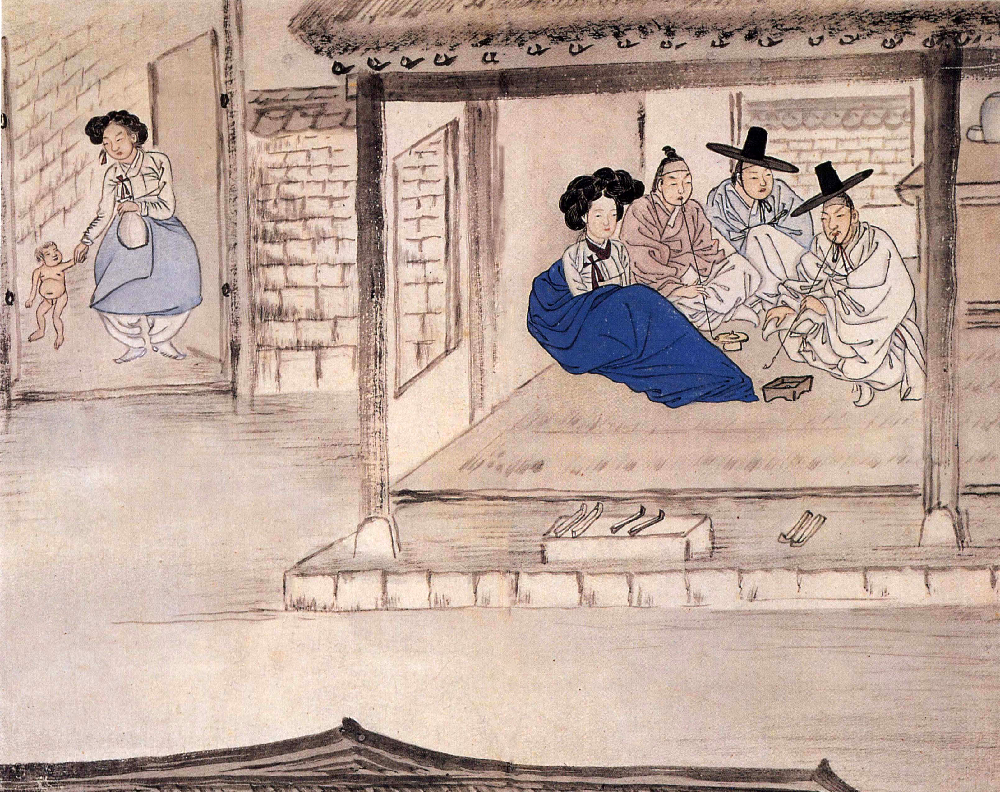
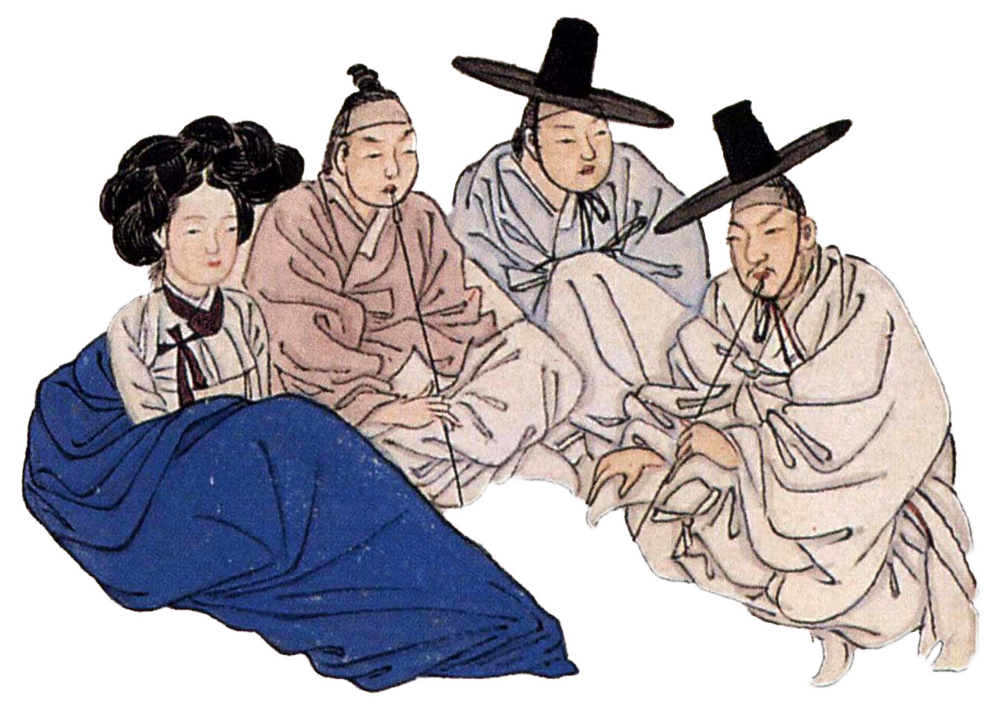
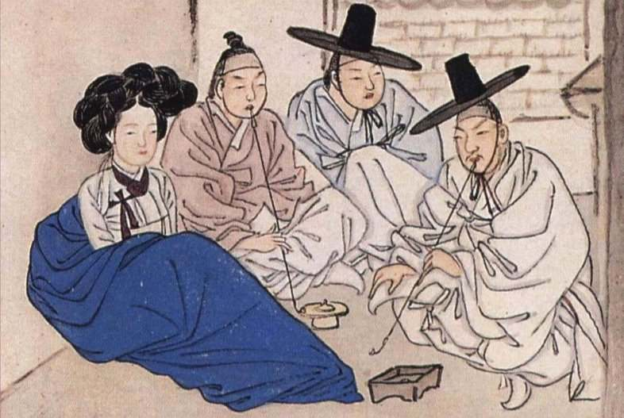
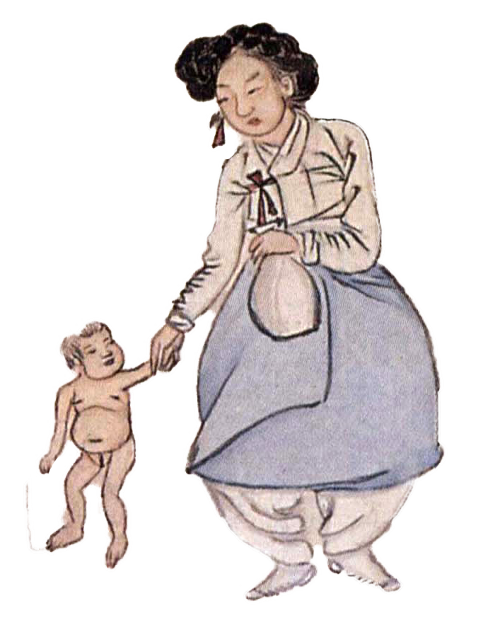

제 4장. 신윤복의 <홍루대주>
홍루紅樓, 붉은 등이 걸린 다락집에서
대주待酒, 술을 기다리다

<홍루대주>, 28.2 x 35.6 cm, 지본채색, 간송미술관 소장
신윤복은 조선 후기의 풍속화가로,
양반층의 풍류와 남녀 간의 연애, 기녀와 기방을
풍자적, 해학적으로 표현한 것이 특징입니다.
특히, <홍루대주紅樓待酒>
이 작품에서는 양반들의 사생활이 낱낱이 드러나는데요.
제목의 홍루紅樓, 붉은 등이 걸린 다락집은 기방을 뜻하며,
기방에서 술을 기다리는 양반들의 모습을 그린 작품입니다.
그런데, 술만 기다리는 것처럼 보이진 않는 것 같네요?

푸른 치마와 옥색저고리를 입은 기녀는 무덤덤하게 앞을 보고 있고
그 옆에 달라붙은 선비는 맨 상투머리에 담배를 물고 있습니다.
오른쪽에 앉은 선비 둘은 갓과 도포를 입었는데,
왼쪽 남자는 주변을 두리번거리는 기색입니다.
이들은 무슨 관계일까요?

남자들을 자세히 살펴보니 왼쪽 둘은 거의 얼굴이 닮았는데,
오른쪽이 더 젊어보이는 걸 보니, 동생인 듯 합니다.
맨 오른쪽의 선비도 이들과 닮은 것을 보니, 이 셋은 모두 형제인 듯 하네요.
즉, 삼형제가 둘러앉은 상황인데, 이들은 여기서 무엇을 하고있을까요?
작품의 제목대로라면, 술을 기다리는 상황이겠지만, 무언가 부족한 설명으로 보입니다.

이제야 조금씩 실마리가 보입니다.
작품의 좌측하단에는 중년여성과 그 손을 잡은 아이가 있는데요.
아이와 여성의 관계는 할머니와 손녀로 보입니다.
그렇다면, 아이의 엄마는 방 안에 푸른치마를 입은 여인이며,
아이의 아빠는 그 여인 옆의 남성인 듯 하네요.
그리고 그 옆에 두 남성은 조카를 보러 온 삼촌들이었네요.
그런데, 방 안의 사람들의 기류가 어색한 것이
마냥 조카를 보러 온 삼촌들 같아보이진 않습니다.
방 안의 공기가 어색한 이유는 바로 아이가 혼외자이기 때문이었습니다.
본처도 첩도 아닌 기녀가 낳은 아이이기에 서자도 되지 못하는 운명입니다.
그렇다면, 아이 아버지가 형제를 이곳으로 데려온 이유는
술을 마시기 위해서가 아닌, 아이를 보여주기 위해서였네요
만약, 이 만남이 잘 이루어진다면, 저 아이의 운명도 바뀔 수 있지 않을까요?
과연 저 아이의 운명은 어떻게 될까요?
.
.
.
여기까지 <우리 전통화 속 숨겨진 이야기>가 준비한 내용이 끝이 났습니다.
즐거운 시간이 되셨나요?
부디 흥미로운 이야기였길 바랍니다.
물론, 이 외에도 더 많은 전통화와 그 속에 담긴 이야기들이 많이 남아있습니다.
이제 여러분이 숨겨진 이야기를 찾아낼 스토리텔러가 될 차례입니다!
-숨겨진 이야기들은 여러분을 기다리고 있답니다-